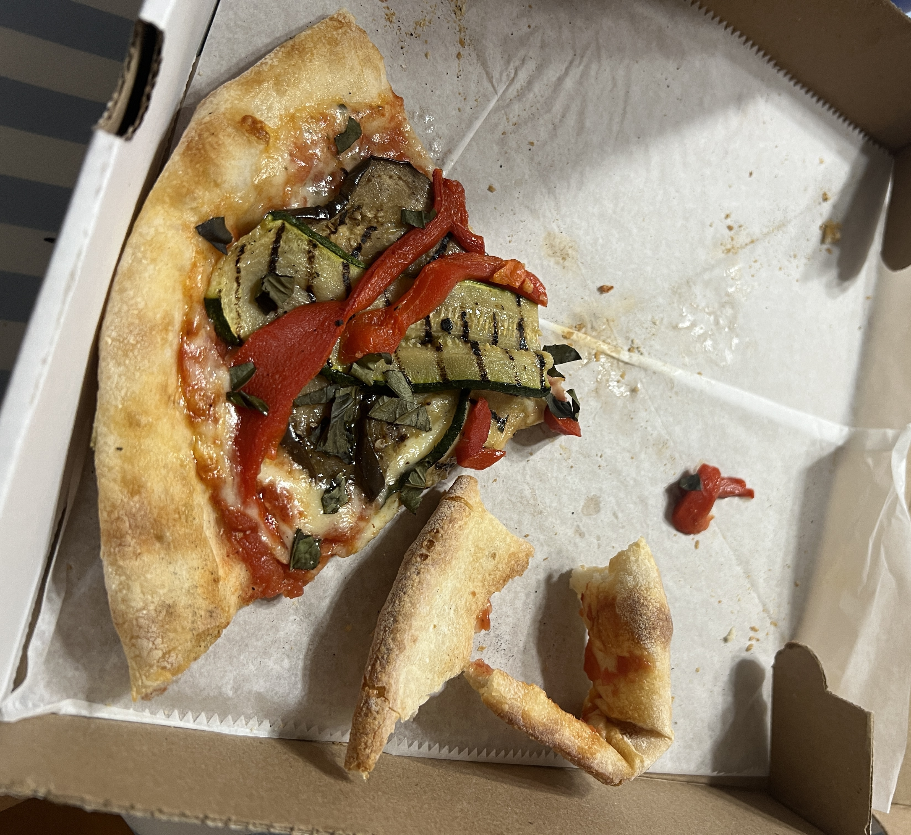

oHHo Pizza
Reviewed November 2024
oHHo review
Ohho Pizza in Bedford, NY, brings a fresh and flavorful take on pizza, combining quality ingredients with a cozy, inviting atmosphere. The crust strikes the perfect balance—crispy on the outside with a soft, chewy interior that’s ideal for holding up under their generous toppings. The sauce is rich and tangy, complementing the high-quality cheese and toppings that range from classic to creative. The standout feature is their dedication to using fresh, locally sourced ingredients, which really elevate the flavors. Whether you’re in the mood for a traditional Margherita or something more adventurous, Ohho delivers a satisfying experience that’s definitely worth a visit.

IlForno Italian Kitchen
Reviewed October 2024
IlForno review
At Il Forno, the Saporito pizza is a standout favorite. Loaded with an array of perfectly grilled vegetables like zucchini, eggplant, and peppers, this pie offers a flavorful, fresh twist on traditional pizza. The thin, crispy crust provides the ideal base for the hearty veggies, while the tangy tomato sauce and melted mozzarella tie everything together. Each bite is a satisfying mix of smoky, savory, and slightly sweet flavors from the grilled veggies. If you’re a fan of vegetable-forward pizzas, the Saporito is a must-try, showcasing the art of combining fresh ingredients into a delightful, wholesome slice.

JMU DHall Pizza
Reviewed August 2024
DHall review
JMU’s D-Hall pizza is a dependable go-to for students craving a quick and satisfying slice. While it may not be the finest pie you’ll ever have, it consistently delivers with its crispy crust, a decent amount of cheese, and classic toppings. The sauce is flavorful enough, though it could use a bit more seasoning to stand out. It’s perfect for a late-night study session or when you’re simply looking for something familiar and comforting. While it may not rival pizzerias in New York or other pizza hotspots, D-Hall pizza remains a beloved option on campus for its convenience and consistency.

Oath Pizza
Reviewed May 2024
Oath review
Oath Pizza at JMU Dukes Dining offers a unique twist on the classic pizza experience, and it’s a standout on campus. The crust is perfectly crispy, with a slight char that adds a delicious depth of flavor. Toppings are fresh, and the variety of options allows you to create a pizza that suits any craving. Whether you’re customizing your own or choosing from their signature creations, the flavor combinations are always spot-on. It’s a great option for a quick, satisfying bite when you’re on the go, with a modern, fast-casual vibe that matches the energy of JMU. Definitely worth checking out if you’re on campus and craving pizza!

Benny Sorrentino's
Reviewed August 2024
Benny's review
Benny Sorrentino’s in Harrisonburg offers a delightful slice of Italy right in the heart of the city. The pizza here is exceptional, with a crispy, thin crust that has just the right amount of chewiness. The sauce is flavorful without being overpowering, and the cheese is perfectly melted, creating a harmonious balance with the fresh, quality toppings. Whether you go for a classic slice or one of their signature pies, the flavors are consistently delicious. The casual, welcoming atmosphere adds to the charm of this local favorite, making it a must-visit for anyone craving great pizza in Harrisonburg.